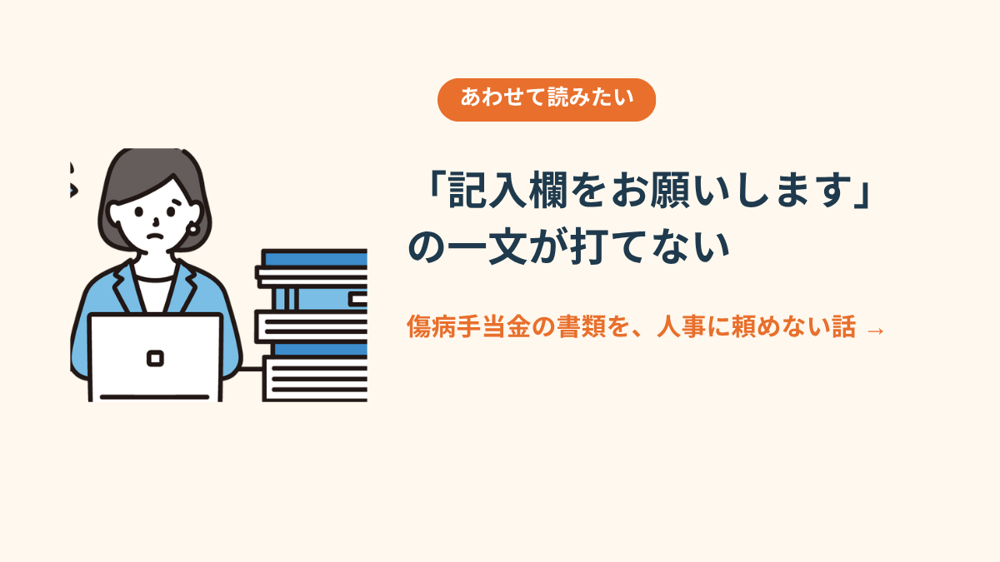
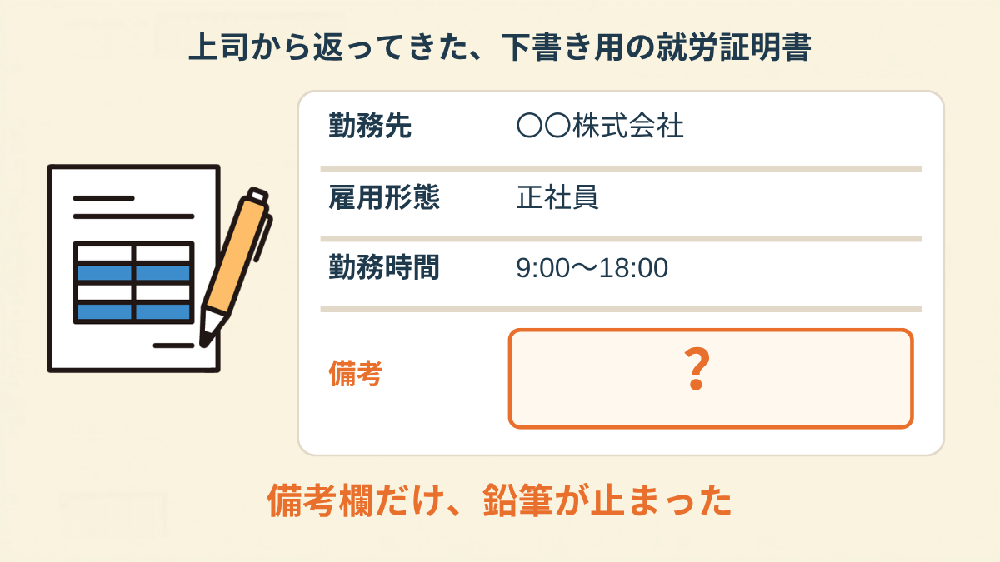
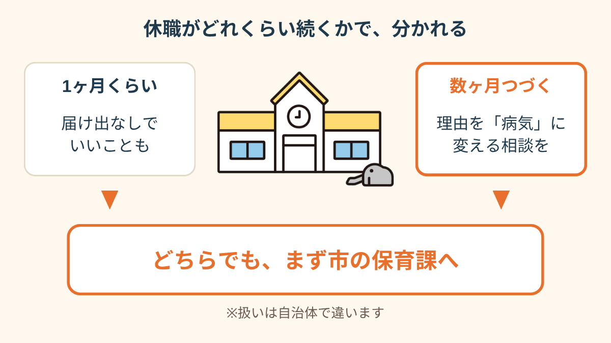
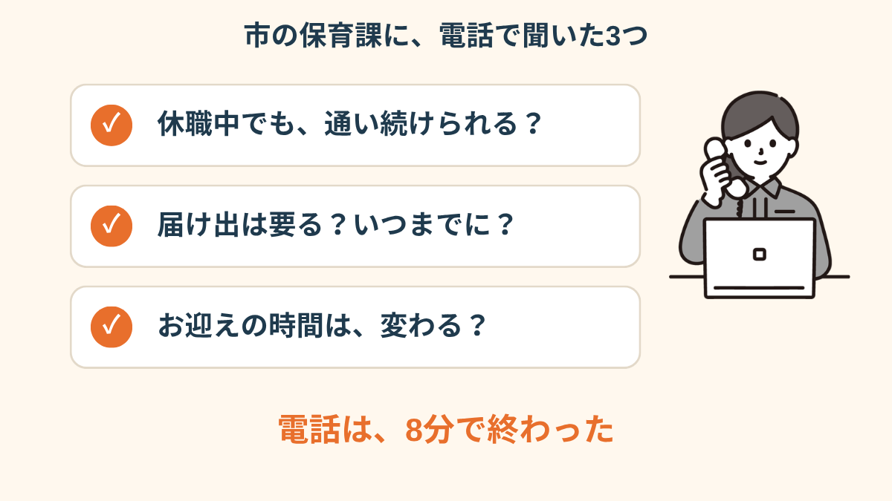
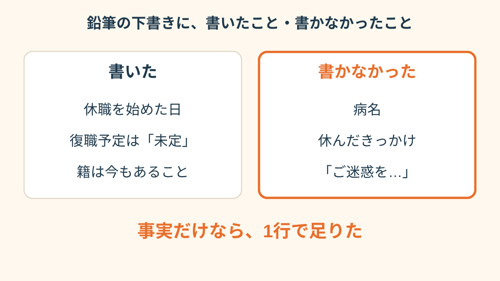
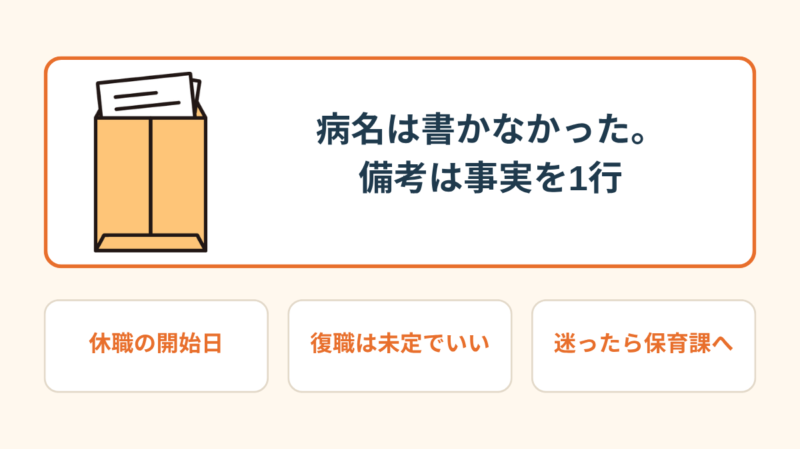

課長の字の付箋が、用紙の右上に貼ってあった。用紙のいちばん上には「就労証明書」。保育園に出す、私が働いていることを証明する紙だ。休職して、4ヶ月になる。
茶封筒に、付箋が1枚
11月に入ってすぐ、保育園から来年度の書類の案内が来た。3歳の娘を、来年も同じ園に通わせるための手続き。必要なものの欄に、会社に書いてもらう「就労証明書」とあった。
人事にメールを送るまで、2日かかった。「休職中なのにすみません」から始まる文を、何回も消した。

会社に書類を頼むメールが打てなかった話 →1週間後、家のポストに茶封筒が届いた。中に、空欄の就労証明書と、あの付箋。
つまり、私が働いていることを、働いていない私が書くということだった。
勤務先、雇用形態、ここまではすぐ書けた。勤務時間の欄で、鉛筆が少し止まった。「9:00〜18:00」。毎朝その時間に家を出ていたのは、もう夏の前の話だ。
それでも、書いた。問題は、その下だった。

備考欄の「休職中」の先
備考欄。「令和8年7月より休職中」と書けばいいのは、なんとなく分かる。分からないのは、その後ろだった。
「適応障害のため」まで書くのか。書いたら、この紙は課長から人事へ行って、市役所へ行って、たぶん保育園にも行く。お迎えのとき、先生がそれを知っている顔をしていたら。そこまで考えて、鉛筆を置いた。
夫に見せたら、「普通に書けばいいじゃん」と言われた。普通って、どっちの普通だろう。そのまま夜中の2時まで、「就労証明書 休職中 備考」で検索していた。
「うちは妻じゃなくて僕が休職で。就労証明書の話、妻に言えなくて、自分で会社に頼みました。退園になったらどうしようって、それしか考えてなかったです。正直、子どもの顔見るのがきつかった」
検索して出てくるのは、会社の人事向けの書き方ばかりだった。「備考欄には休職期間を記載」。それは分かってる。私が知りたいのは、休んでいる本人が、どこまで書かなきゃいけないのかだった。


市の保育課に、8分だけ電話した
次の日の午前、娘を送ったあと、車の中から市役所に電話した。「保育課につないでください」の声が、自分でも分かるくらい小さかった。
「休職中なんですけど、就労証明書って……」と言いかけたら、担当の人は「ああ、いらっしゃいますよ」と言った。それだけで、ハンドルを握っていた手がゆるんだ。

私の住んでいる市では、こうだった。休職が続くなら、保育が必要な理由を「仕事」から「病気の療養」に変える届けが出せる。その場合は、主治医の診断書を市に直接出す。お迎えの時間は、今より短くなるかもしれない。
そして、就労証明書の備考欄は、会社が休職の期間を書く欄。病名は、この紙に書く話じゃなかった。
「私も市に聞いたら、うちの市は休職3ヶ月を超えたら届けてね、って言われました。ネットで『即退園』とか見て1週間眠れなかったのに、電話は5分。なんで先に聞かなかったんだろうって」
その夜、下書きの備考欄に、鉛筆で1行だけ書いた。「令和8年7月1日より休職中（復職日未定）」。課長への付箋には「病名は書かずにお願いします。市には診断書を別で出します」と足した。

封筒をポストに入れた帰り、そのまま園にお迎えに行った。先生は、いつもと同じ声で「おかえりなさい」と言った。娘は、どんぐりを3つ握っていた。

この記事に、聞いてみたいことはありますか？
「自分の場合はどうなんだろう」と思ったことを、気軽に書いてみてください。いただいた質問は個別にお返事したうえで、匿名で記事にすることがあります。